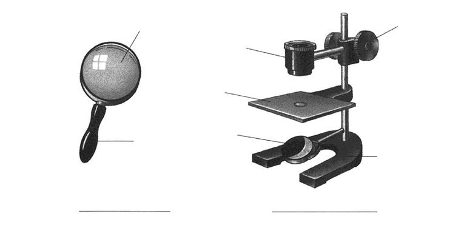
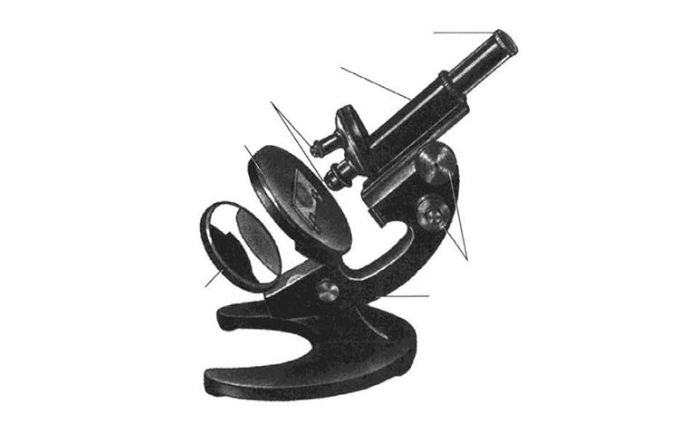
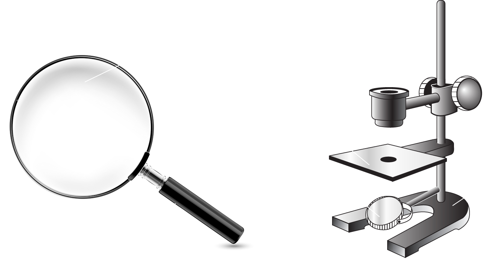
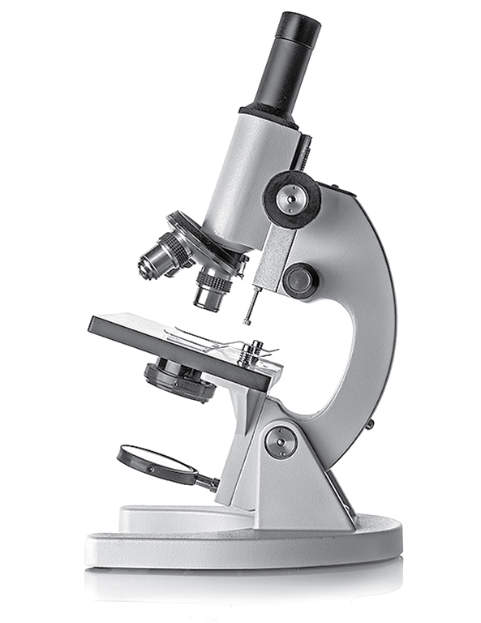
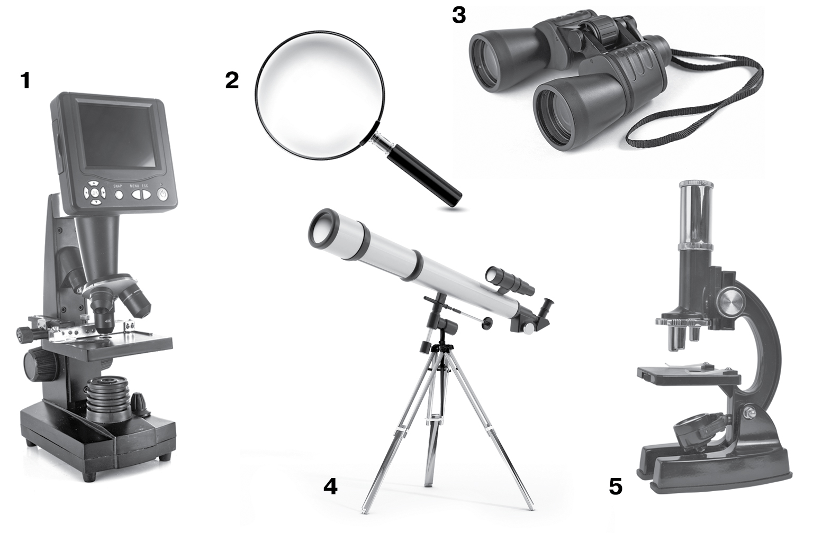

> Введите ваши данные для доступа к терминалу:
БИОЛОГИЧЕСКИЙ МОДУЛЬ: ГЛАВА 2 (§9. УВЕЛИЧИТЕЛЬНЫЕ ПРИБОРЫ)
Перетащи названия составных частей к соответствующим меткам на рисунках лупы и микроскопа:

Распредели подписи к основным узлам светового микроскопа:

Какое лабораторное оборудование изображено на рисунке?

Какой увеличительный прибор увеличивает объект в 200 раз?
Какой увеличительный прибор увеличивает объект в 2–20 раз?
Как называется часть микроскопа, куда крепят предметное стекло с микропрепаратом?

С помощью какой части микроскопа корректируют изображение объекта под своё зрение?
С помощью какой части микроскопа устанавливают свет для работы с микропрепаратом?
На каком расстоянии должен располагаться микроскоп от края стола при работе с ним?
Поместить предметное стекло с приготовленным препаратом на . Устанавливают свет для работы с помощью зеркала.
Какие части микроскопа дают разные увеличения объектам?
Какое оборудование НЕ используется при изучении мелких объектов и клеток? Под какими цифрами изображено это оборудование?

Что из приборов является лабораторным оборудованием для изучения органоидов клеток в лабораторных опытах?
Какое оборудование используется при изучении объектов (орнитологи наблюдают птиц)?
Какой увеличительный прибор используют при необходимом увеличении изображения объекта в 25 раз?
Соотнеси цифры увеличения объектов с приборами, которые их дают:
Какое общее увеличение объекта даст световой микроскоп, если на окуляре выставлено увеличение Х10, а на объективе Х40?
Укажи все истинные биологические утверждения из списка: